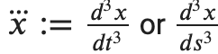
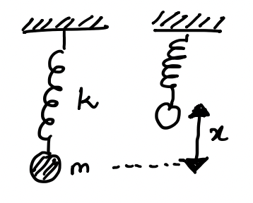
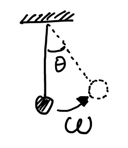

Complex Systems Theory
Contents
Complex Systems Theory¶

Complex systems theory is a mixture of multipple fields of study including (but not limited to) systems theory, network/graph theory, non-linear dynamics, control theory, and field theory. In this notebook, we shall focus on dynamical systems theory, starting with simpler, linear, 1-dimensional systems, move to 2-dimensional systems, simple oscillatory motion, phase oscillators, coupled oscillation, and end with control of system with an introduction to bifurcations.
image source: wikimedia corresponding to the wikipedia article titled Complex system
Dynamical Systems¶
The idea behind dynamical systems is relating the change in position of a body, a function of the body, or a system with the position itself. We characterize that with the differential equation: \(\frac{dx}{dt} = \mathcal{f}(x)\).
Some nomenclature:
We use the dot-accent for differential terms;
i.e. \(\dot{x} := \frac{dx}{dt}\) or \(\frac{dx}{ds}\) for time or spacial position (respectively),
\(\ddot{x} := \frac{d^2x}{dt^2}\) or \(\frac{d^2x}{ds^2}\),
and  or \(\frac{d^3x}{ds^3}\), and so on…
We use lower case normal fonts for scalars: like \(x\) or \(y\),
lower case math script for vectors: like \(\mathbb{v}\),
and upper case math script for matrices: like \(\mathbb{A}\).
{kind=link}
So, the basic formula now can be written as: \(\dot{x} = \mathcal{f}(x)\). If one were to try out the simplest function for the equation, that is, to solve for \(\mathcal{f}(x) = x\),
$\(let\ x := x(t) = k\phi(t)\)\(
\)\(i.e.\ \dot{x} := k\dot\phi(t) = k\frac{d\phi(t)}{dt}\)\(
\)\(\therefore\ k\frac{d\phi(t)}{dt} = k\phi(t) \ \ \ \ \ [\because \dot{x} = x]\)\(
\)\(\implies\ \frac{d\phi(t)}{dt} = \phi(t) \)\(
\)\(\implies\ \phi(t) = \mathcal{e}^{t} \)\(
\)\(\implies\ x(t) = k\mathcal{e}^{t} \ \ \ \ \ [k = x(t=0)]\)$
Modeling for a simple 1-D system:¶
Let’s assume a simple uni-directional motion of a physical body (a ball in a spring-mass system). We assume the spring constant to be \(k\) and mass of the ball to be \(m\). If the spring is pulled down by an amount \(x\), we can write the equations for conservation of energy \((\frac{1}{2}kx^2 = \frac{1}{2}mv^2)\) and equillibrium of force \((ma = -kx)\). Note, that velocity is \(v = \frac{dx}{dt} =: \dot{x}\) and acceleration is \(a = \frac{d^2x}{dt^2} =: \ddot{x}\). We now get the following equations:
 $\(\frac{1}{2}kx^2 = \frac{1}{2}m\dot{x}^2\)\( \)\(\implies \dot{x}^2 = \frac{k}{m}x^2\)\( \)\(\implies \dot{x} = \sqrt{\frac{k}{m}}x + 0\dot{x}\)\( \)\( also,\ m\ddot{x} = -kx\)\( \)\(\therefore \ddot{x} = -\frac{k}{m}x + 0\dot{x}\)$
Now, why would we want to add a ‘\(0\dot{x}\)’ term here? To account for a position/motion vector, \( \mathbb{y} = \begin{bmatrix} x \\ \dot{x} \end{bmatrix}\), and its differential;
Modeling a Coupled System:¶
Let’s set up a similar system but with two different variables, \(\mathbb{v} = \begin{bmatrix} x \\ y \end{bmatrix}\), such that \((\dot{x} = ax + by)\) and \((\dot{y} = cx + dy)\). Think, motion of a body on a surface. One can then write:
Simple Predation Model:¶
These systems model equation where the population growth is linked to multiple predatory/prey groups, including their own. Let’s assume a simpler model of only 2 groups: rabbits (\(x\)) and foxes (\(y\)). We assume that rabbits have a population growth factor of \(g\) and their death rate can be measured by a kill rate \(k\) dependent upon the population of foxes. On the other hand, foxes will have a growth rate based on the availability of food/prey, with a factor of \(f\), while an absence of food will imply a death rate of \(d\). We can now form the two equations as:
\(\dot{\mathbb{v}} := \begin{bmatrix}\dot{x}\\\dot{y}\end{bmatrix} = \begin{bmatrix}gx - ky\\fx - dy\end{bmatrix} = \begin{bmatrix}g & -k\\f & -d\end{bmatrix}\cdot\begin{bmatrix}x\\y\end{bmatrix} =: \begin{bmatrix}g & -k\\f & -d\end{bmatrix}\cdot\mathbb{v}\)
Note that this is a simpler, linear predation model. Generally, the interaction term is controlled by the population value of the group. That is, there is a control parameter for the death toll on rabbits with the corrected equation looking like [\(\dot{x} = gx - kxy = (g - ky)\cdot x\)], and the predation-value is controlled by how many foxes go on the hunt, giving us [\(\dot{y} = fxy - dy = (-d + fx)\cdot y\)].
Models in Discrete time:¶
Let’s go back to the general model, and link discrete intervals as sampled continuous time segments. i.e. we can say that \(t\rightarrow n\), in which case \(dt(\approx\Delta t)\rightarrow \Delta n = (n+1)-(n) = 1\). Sampling thus, we can also change the continuous models from the coupled system:
The last equation is similar to that of the Markov Chain, especially given that the dynamical systems we study are usually memoryless and homogeneous, satisfying the Markov Principal. However, one must note that unlike probabilities for the transition matrix, here the matrix is made up of a set of parameters that may act as control variables/functions.
Phase Oscillators:¶
We now look at phase oscillators. Assume, as shown in the figure, that a mass is hanging by a thread in an ideal world where the only force on the mass is that of gravity. We now displace the mass by an angle \(\theta\), and let it swing. The angular velocity could be calculated as \(\omega = \frac{d\theta}{dt} = \dot{\theta}\), or the position/angle of the mass by \(\theta = \omega t + \theta_0\), where \(\theta_0\) is the initial position/angle of the mass.

In case we couple the system by adding another mass on a string, and connect them both by a rod. Then do the same excercise, that is pull a mass to an angle and let the mass swing, we see that since the rod is ideal, the second mass-string system will follow the first system, \(\theta_i = \omega_i t + \theta_{0,i}\). In such cases, we say that the system is ‘coupled’;
However, if there is an imperfection in the way these systems are coupled, then we will observe that each of the two systems will try to exert a control on the motion of the other. We might observe this is the form of a deviation in the angular velocity between the two oscillators as \(\omega_1 - \omega_2 = \delta\). To set up control over this seemingly chaotic model, we use the phase-difference as a control parameter, \(\phi(t) := \theta_1(t) - \theta_2(t)\ [\text{mod}(2\pi)]\). We apply this control parameterin the equation of change as \(\dot{\theta} = \omega \pm \gamma \text{sin}\phi\).
Note, that we substitute \(\mu := \frac{2\gamma}{\delta}\) as \(\gamma\) is the only parameter that we can control, and that \(\delta\) is observed deviation, i.e. the scalar that will moderate the control parameter \(\text{sin}\phi\). We also note that \(\delta\) is the deviation of the angle in time (difference in angular velocity), i.e. \(\delta\sim\frac{ds}{dt}\), since \(s\) represents the spacial dimention. Also given that \(\dot{\phi}=\frac{d\phi}{dt}=\frac{d\phi}{ds}\cdot\frac{ds}{dt}\), we find that:
Now, we know that \(\mathcal{f}\sim\frac{d\phi}{ds}\), i.e. if \(\mu=1\), we may find that we hit a local extrema (\(\frac{d\phi}{ds}=0\)) at \(\phi=\frac{pi}{2}\). In systems theory, we call such points Equillibrium Points, represented as \(\text{EQL} \sim (\phi^\text{*},\mu^\text{*})\). However, if \(\phi=\frac{\pi}{2}\), then \(\mathcal{f'} \sim \frac{d^2\phi}{ds^2} = 0\). From differential mathematics, we find that when the second-order differential equates to zero (\(0\)) for a given set of values, the system becomes bi-stable. In dynamical systems, we call systems at this point to be in a state of Bifurcation.
General Equation for Bifurcations:¶
Bifurcative states always occur at \(\text{EQL}\sim(x^\text{*},\mu^\text{*})\) for any given function (\(\mathcal{f}\)) of a dynamical system. To solve for the bifurcation, we use the generalized Taylor expantion for differential equations:
[higher order terms \(\sim 0\) ].
Notes and Resources:¶
Some really good examples of bifurcation are provided in this PDF from UCSD. Even though we stop here in this notebook, certain topics like Hopf bifurcation, Lyapunov theory, and Chaos theory are also pretty interesting. Other resources one may want to go through would be Project Complexity Explained by Dr. Manlio De Domenico (CoMuNe Lab, Fondazione Bruno Kessler, Italy) and Dr. Hiroki Sayama (Dept. of Systems Science and Industrial Engineering, Binghamton Univ., USA), Dr. Sayama’s repository for complex systems analysis PyCX, and the project Complexity Explorables by Dirk Brockmann. Books we found useful to review included:
J. Guckenheimer and P. Holmes’ Nonlinear Oscillations, Dynamical Systems, and Bifurcations of Vector Fields (Springer)
S.H. Strogatz’s Nonlinear dynamics and chaos: with applications to physics, biology, chemistry and engineering (Cambridge Press)
M. W. Hirsch S. Smale and R. L. Devaney’s Differential equations, dynamical systems and an introduction to chaos (Elsevier)
Eugene Izhikevich’s Dynamical systems in neuroscience: the geometry of excitability and bursting (MIT Press)